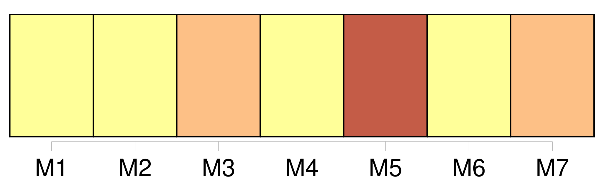
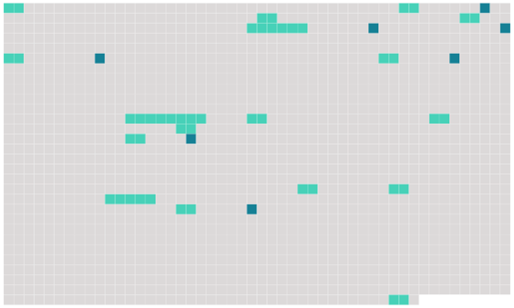

Longueur nb maillons : 24 mentions |
 |
[Les enfans] seront confiés à l'époux qui a obtenu le divorce, à moins que le tribunal, sur la demande de la famille ou du commissaire du Gouvernement, n'ordonne, pour le plus grand avantage [des enfans] , que tous ou quelques-uns d' [eux] seront confiés, aux soins soit de l'autre époux, soit d'une tierce personne. [1 phrases]
Quelle que soit la personne à laquelle [les enfans] seront confiés les père et mère conserveront respectivement le droit de surveiller l'entretien et l'éducation de [leurs enfans] et seront tenus d'y contribuer à proportion de leurs faculté. [1 phrases]
La dissolution du mariage par le divorce admis en justice ne privera [les enfans nés de ce mariage] , d'aucuns des avantages qui [leur] étaient assurés par les lois, ou par les conventions matrimoniales de [leurs] père et mère ; mais il n'y aura d'ouverture aux droits des encans que de la même manière et dans les mêmes circonstances où ils se seraient ouverts s'il n'y avait pas eu de divorce. [1 phrases]
Dans le cas de divorce par consentement mutuel, la propriété de la moitié des biens de chacun des deux époux sera acquise de plein droit, du jour de leur première déclaration, aux enfans nés de leur mariage : les père et mère conserveront néanmoins la jouissance de cette moitié jusqu'à la majorité de [leurs enfans] , à la charge de pourvoir à [leur] nourriture, entretien et éducation, conformément à leur fortune et à leur état ; le tout sans préjudice des autres avantages qui pourraient avoir été assurés [auxdits enfans] par les conventions matrimoniales de [leurs] père et mère. [19 phrases]
De la filiation [des enfans légitimes ou nés dans le mariage] [1 phrases]
[L'enfant] conçu pendant le mariage, a pour père le mari.
Néanmoins celui -ci pourra désavouer [l'enfant] , s'il prouve que, pendant le temps qui a couru depuis le trois-centième jusqu'au cent-quatre-vingtième jour avant la naissance de [cet enfant] , il était, soit par cause d'éloignement, soit par l'effet de quelque accident, dans l'impossibilité physique de cohabiter avec sa femme. [1 phrases]
Le mari ne pourra, en alléguant son impuissance naturelle, désavouer [l'enfant] : il ne pourra [le] désavouer même pour cause d'adultère, à moins que la naissance ne lui ait été cachée, auquel cas il sera admis à proposer tous les faits propres à justifier qu'il n'en est pas le père. [10 phrases]
Si le mari est mort avant d'avoir fait sa réclamation, mais étant encore dans le délai utile pour la faire, les héritiers auront deux mois pour contester la légitimité de [l'enfant] , à compter de l'époque où [cet enfant] se serait mis en possession des biens du mari, ou de l'époque où les héritiers seraient troublés par [l'enfant dans cette possession] [1 phrases]
Tout acte extrajudiciaire contentant le désaveu de la part du mari ou de ses héritiers, sera comme non avenu, s'il n'est suivi, dans le délai d'un mois, d'une action en justice, dirigée contre un tuteur ad hoc donné à [l'enfant] , et en présence de [sa] mère. [23 phrases]
L'action en réclamation d'état est imprescriptible à l'égard de [l'enfant] |
 |
Il est possible de télécharger la ressource sur la page Ortolang |
Si vous avez des questions ou vous voyez des erreurs, merci d'envoyer un mail à silvia.federzoni89@gmail.com |